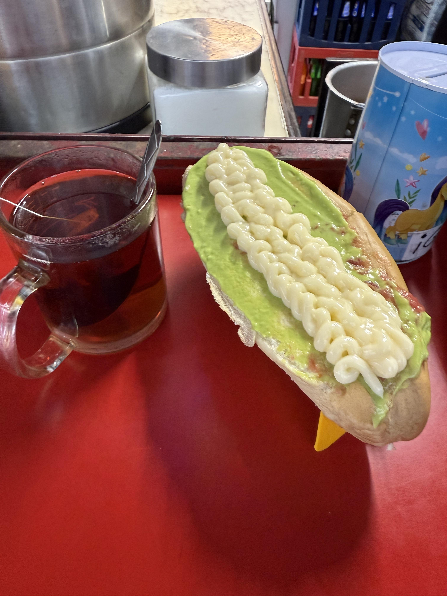
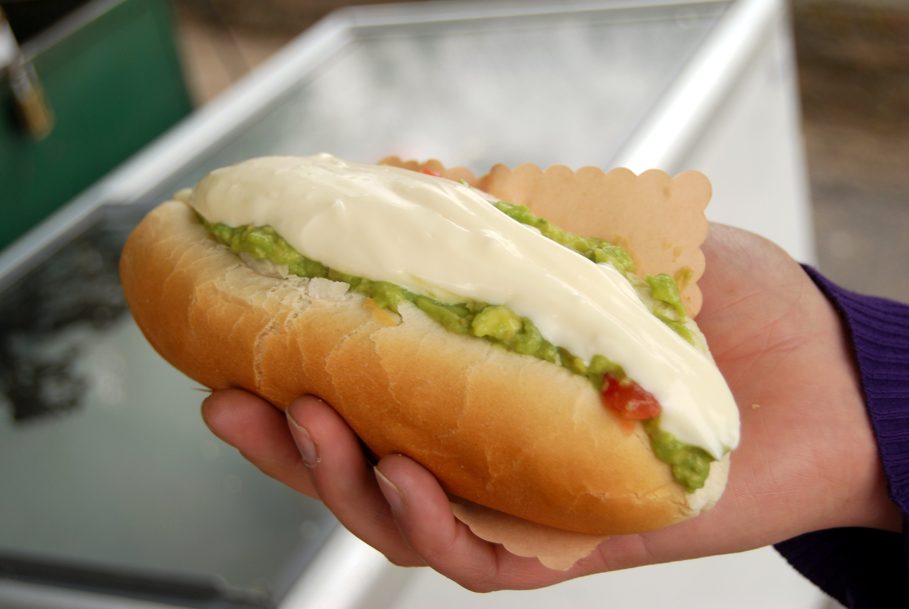

Description
The completo is one of the most known and loved dishes in Chile. It mainly consists of a bun with a sausage and different ingredients. One of its most famous versions is the Italian completo, which includes avocado, tomato, and mayonnaise.
Summary
The completo stands out for being a simple, hearty, and easily accessible meal in various parts of Chile. One of the most popular completos are from talca. Moreover, there are different ways to prepare it, allowing each person to have their preferred version. U can do many variants like, papapleto, instead of sausage, its made with french fries
My rating
★★★★★
5 of 5 stars
Personal conclusion
In my opinion, I tried many completos, one of the best its on local foodtrucks and restaurants like "Completos rosita" The *completo* is definitely one of the most delicious dishes of Chile. Because its reasonably priced, and represents a well-known part of Chilean cuisine. I especially like the *completo* "con todo" (with everything) because of the combination of avocado, tomato, and mayonnaise, while the sauerkraut adds a saltier touch. It is a simple meal, yet it is packed with flavor and is the kind of dish that can be enjoyed with friends or family.